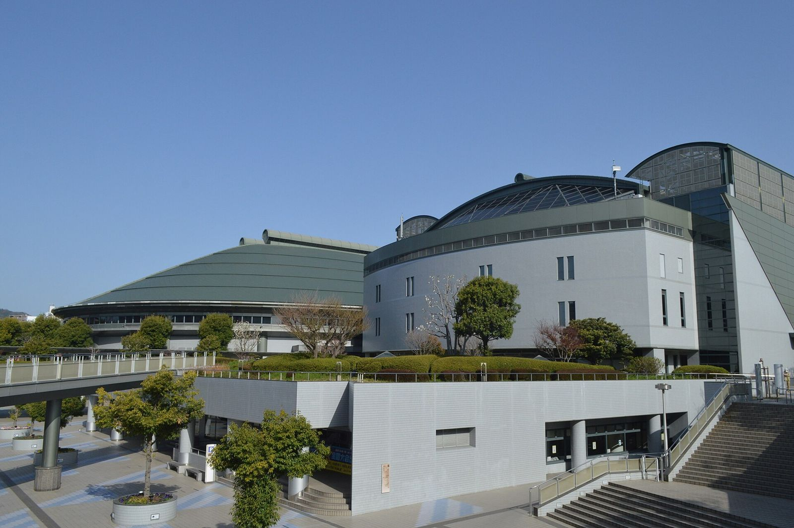

ライブと宿と車と自転車ツアーは決まっています。残っているのは、ゆりやがいつ広島に入るか、28日の夜をどこで寝るか、29日の帰り方、予約を誰が取るか。下の4つを押して決めていきます。
/ 4 決まった
どちらでも、お好み焼きはライブの前に。合流の場所と時間は到着が決まってから。
街に泊まるなら、車は朝まで置ける駐車場に入れて、29日の朝9時に返します。
ゆりやにお願いしたいのは、石飛さんにツアーの集合場所を聞くこと。